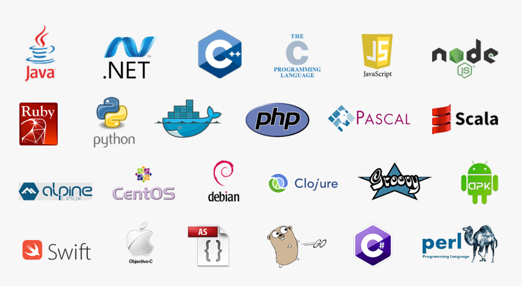

モジュール2：プログラミング言語

いよいよ「本物の」開発者の仕事に入ります！ このモジュールでは、プログラミング言語について体系的に説明します。 言い換えると、以下のことについて議論します：
- プログラミング言語とは何か？なぜプログラミング言語が必要なのか？
- どのような種類のプログラミング言語が存在し、それぞれの特徴は何か？
- 現代のプログラミング言語に共通するコンセプト、構文、特性は何か？ その設計の背後にはどのような理論があるのか？
さらに、いくつかの「ミニコーディングラボ」があり、 このチュートリアルの最後には、プログラミング言語を使用してソフトウェアを作成する方法を紹介する最終プロジェクトがあります。
このモジュールの学習方法
このモジュールは初心者にも分かりやすく設計されていますが、 言語のチュートリアルではありません。 このコースの設計思想は「AI（2023年時点）または検索エンジンで簡単に見つけることができる情報は省略する」というものなので、 実際のプログラミング言語の構文の詳細には踏み込みません。 コンセプトの説明やコードラボで特定のプログラミング言語の構文を説明することもありません。 その代わり、AIコンサルタント（ChatGPTなど）にアクセスできることを前提とし、 そのような情報を説明するために彼/彼女（またはGoogle）に常に質問する必要があります。 インターネット（2022年末以降はAIも含む）での検索は、開発者にとって非常に重要な能力であり、 初めからその能力を開発することを強くお勧めします。
以下はChatGPTにヘルプを求める方法の例です：
You:
C++のプリミティブ変数の種類とサイズ（バイト単位）を簡潔に説明していただけますか？
できるだけ簡潔にお願いします。
ChatGPT:
もちろんです、C++のプリミティブ変数の種類とサイズについて簡潔に説明します：
1. **char**：通常1バイト。単一の文字を表すために使用されます。
2. **int**：通常4バイト。整数に使用されます。
3. **float**：通常4バイト。単精度浮動小数点数に使用されます。
4. **double**：通常8バイト。倍精度浮動小数点数に使用されます。
5. **bool**：通常1バイト。真偽値（`true`または`false`）に使用されます。
6. **short int**（short）：通常2バイト。小さい整数に使用されます。
7. **long int**（long）：通常4バイト（ただし一部のシステムでは8バイト）。大きい整数に使用されます。
8. **long long int**：通常8バイト。さらに大きな整数に使用されます。
9. **unsigned int**：通常4バイト。`int`と同様ですが、正の値のみです。
10. **long double**：通常12または16バイト。拡張精度浮動小数点数に使用されます。
これらの型の正確なサイズは、コンパイラとマシンのアーキテクチャによって異なる場合があることに注意してください。
上記に示されたサイズは一般的ですが、すべての環境で保証されているわけではありません。
C++の標準ではこれらの型の最小サイズが定義されていますが、コンパイラはより大きなサイズを使用することが許されています。
You:
ありがとうございます！
ChatGPT:
どういたしまして！C++またはその他の質問があれば、お気軽にどうぞ。楽しんでコーディングしてください！
このモジュールを学ぶ上でプログラミングをたくさん行うことも非常に重要です。 2023年時点でも、コーディングはプログラミング学習において欠かせないものです。 「練習は完璧にする」という言葉はコーディングにも当てはまります。
何をコーディングすれば良いかわからない場合、フレームワークの学習が良いスタート地点です。 例えば、ゲームエンジンであるUnityを学ぶことができます。 Unityを使用すれば、プログラミングを学びながら素晴らしいゲームを作成することができます。 また、美しいアプリを簡単に作成することができるFlutterも学ぶことができます。 他のフレームワークを AI に提案してもらうこともできます。
できるだけ早くLinuxに切り替えてください！
さらに、できるだけ早くLinuxオペレーティングシステム（OS）をインストールし、 ターミナルに慣れておくことを強くお勧めします （ターミナルが何かわからない場合はAIに質問してください）。 自分のコンピューターを台無しにすることを本当に心配している場合は、 現時点では仮想マシン、Docker、またはWSLから始めることができますが、 準備ができたらデュアルブートなどの「ネイティブ」インストールに切り替えることをお勧めします。 Linux OSを使用する理由は次のとおりです：
- Linuxを使用することで、コンピュータのハードウェア、オペレーティングシステム、ソフトウェアの動作についてより理解することができます。 これは、Linuxが開発者向けに設計されているのに対し、Windowsは一般のユーザー向けに設計されているためです。 そのため、Windowsは開発者が理解すべき多くの詳細な情報を、 オペレーティングシステム、ソフトウェア、ハードウェアなどを含めて抽象化しています。 一方、Linuxベースのオペレーティングシステムは通常それらの詳細を抽象化しません。 たとえば、LinuxではCPUコアの周波数を簡単に制御することができますが、Windowsでは簡単にはできません。
- 開発エコシステムはLinux上でずっと優れています。 多くのフレームワークやソフトウェアはLinuxのみをサポートしています。 そうでない場合でも、Linux上で開発環境（開発用のソフトウェアスイート）を設定するのは通常非常に簡単です。 一方、Windows上でほとんどの開発者向けのものを設定するのは非常に困難です。 Microsoft自体が提供する統合開発環境（IDE）であるVisual Studio Codeでも同様です。
上記で「Linuxベースのオペレーティングシステム」という用語を使用したことに気づかれたかもしれません。 そのとおり、Linux自体はオペレーティングシステムではありません。 代わりに、Debian、Ubuntu、Arch Linux、Deepinなど、Linuxに「基づいている」多くのオペレーティングシステムがあります。
個人的には、初心者には最新のLTS（長期サポート）版のUbuntuを使用することをお勧めします。 なぜなら、
- インストールが簡単で初心者にも優しいから（バージョンアップのためにarchを試す自信は持ちませんでした）。
- 優れたエコシステムがあるからです。 ほとんどの場合、開発者向けのものがUbuntuをサポートしていない場合、他のOSで動作することを期待することはできません。
Linuxのはじめの一歩を踏み出すためのリソース：
- MIT Missing Semesterの1つ目と 2つ目 の講義：これらの講義はシェルの入門チュートリアルです。 （これらが長すぎると感じた場合は、AIにチュータリングを頼むこともできます。）
- Nushell：モダンなシェルです（シェルが何であるかわからない場合はAIに尋ねてください）。 個人的には、bashをnushellで置き換えており、 nushellのようなデータ指向のシェルが、2023年時点ではデファクトスタンダードであるテキスト指向のbashを必ずしも置き換えると信じています。 ただし、nushellはまだ（2023年時点で）新興の状態で、成熟したエコシステムに欠けているため、 試す前にbashに慣れておくことをお勧めします。
- Oh My Posh：これを使用すると、ターミナルをより美しくすることができます。 nushellを含む多くのシェルで動作します（微調整が必要な場合があります）。 他のシェルを使用する場合は、"oh-my-bash"や "oh-my-zsh"など、「oh-my-」ファミリーの他のメンバーもあります。
- Customize your Ubuntu into macOS Monterey： このチュートリアルでは、Ubuntuをmacのように見せる方法を紹介しています （そうです、私が作ったビデオです）。 macスタイルの美学が好きな場合は、試してみてください。
さて、次はプログラミング言語が何であるか、 そして主要なプログラミング言語のカテゴリについて話していきます。